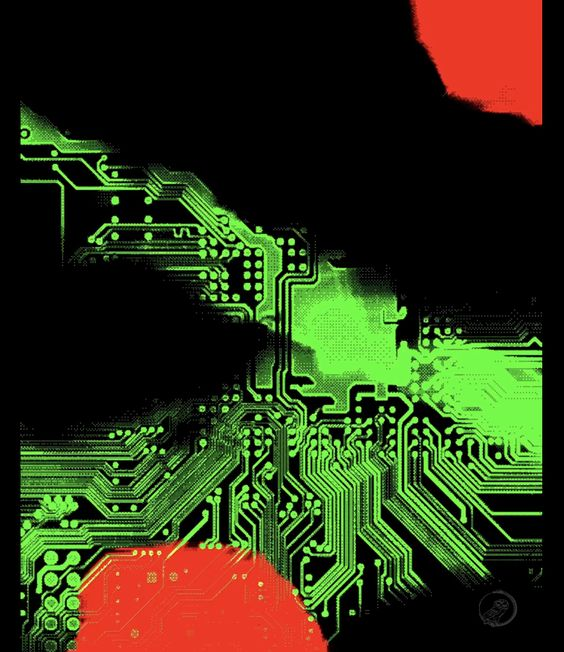
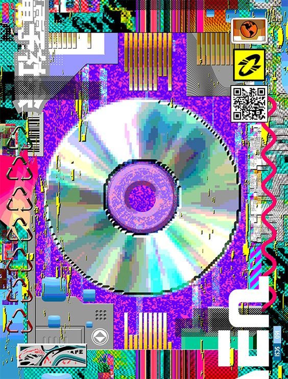

RAM scrapperRAM scrapper also known as Memory-scraping malware is a malware that scans the memory of digital devices, notably point-of-sale (POS) systems, to collect sensitive personal information, such as credit card numbers and personal identification numbers (PIN) for the purpose of exploitation. |
 |
|---|
|  |
The first RAM scrapper attack
The first known RAM scraping attack was reported in an alert issued by the credit
card company Visa Inc. in October 2008. The company's security team discovered that
point-of-sale (POS) terminals used to process customer transactions using its cards
had been accessed by hackers. The hackers had been able to obtain unencrypted customer
information from the RAM in the terminals.
|
|---|
Infection methodHow does it work?All the plastic credit cards contain two types of informstion:
The POS terminal collects all of the data in that first set, and sometimes the second code as well. The data is then held in the memory of that POS machine until it is periodically purged. |
 |
|---|
Newer ways to steal credit cards dataScreen grabbers and keystroke loggers are newer ways to steal credit card data. If the user suspects that a keylogger is installed on his computer, then a number of tricks will help protect against the pest. For example, boot the operating system from a CD or USB drive, and use the virtual on-screen keyboard. |
|---|
Avoiding RAM ScrapingThwarting RAM scraping is mostly the job of the retailer,
not the consumer. Luckily, a good deal of progress has been made since the
infamous attacks on Home Depot and Target.
|  |
|---|
Malware-RAMscrapper |
Alika Tsulygina |
|
|---|